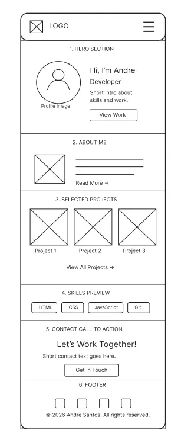
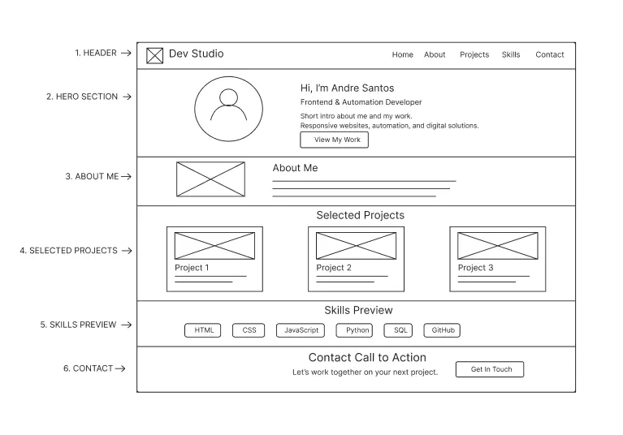

It’s Wesus
A private investor portal interface designed to display real estate investment information, contracts, assets, and user data.
Technologies: HTML, CSS, JavaScript, Supabase, API Integration
Individual Project Site Plan
Andre Santos Dev Studio
This name was selected because it represents a personal developer portfolio focused on web development, automation, artificial intelligence tools, and practical digital solutions.
The purpose of this website is to present André Santos as a growing developer by showing his technical skills, selected projects, learning goals, and contact information for academic, professional, and freelance opportunities.
The website will include a home page, a skills page with dynamic content from a JSON file, and a contact page with a form. The project will use a dark, modern, and technology-focused design style.
#020617
Main page background
#0f172a
Cards, header, footer, and sections
#38bdf8
Buttons, links, and active navigation
#2dd4bf
Skill tags and small highlights
#f8fafc
Main text on dark backgrounds
#cbd5e1
Secondary text and descriptions
Arial: Used for body text, paragraphs, buttons, and navigation.
Georgia: Used as an optional font for some headings if needed.
The final project may use Google Fonts, but this site plan uses simple fonts to keep the page clean and easy to read.
The portfolio will include selected project cards with screenshots, short descriptions, and the main technologies used. Project links may be added later if the projects are published online.
A private investor portal interface designed to display real estate investment information, contracts, assets, and user data.
Technologies: HTML, CSS, JavaScript, Supabase, API Integration
A dessert shop website concept focused on selling cakes in jars with a sweet, simple, and friendly visual identity.
Technologies: HTML, CSS, JavaScript
A digital library concept created to organize and present Church-related books and study materials in a clear way.
Technologies: HTML, CSS, JavaScript
A school management system built with OutSystems to organize academic information and support administrative workflows.
Technologies: OutSystems, Database Logic, Low-Code Development
A bike store website concept focused on presenting products, brand identity, and a clean shopping experience.
Technologies: HTML, CSS, JavaScript
A responsive chamber of commerce website built for WDD 231 with a member directory, join page, form, modals, and dynamic content.
Technologies: HTML, CSS, JavaScript, JSON, Fetch API

Mobile layout sketch for the home page.

Desktop layout sketch for the home page.